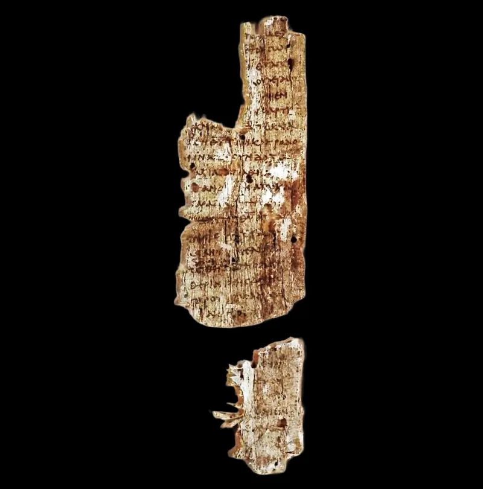

This Christian argument does not hold up. Drop it.
"You secretly believe, and you're suppressing it." "You have no basis for morality." "Atheism takes more faith than Christianity." All three are common. All three should go.
It proof-texts Romans 1 and skips Romans 2:14-15, where Gentiles without the law "do by nature what the law requires" because it is "written on their hearts." The Bible predicts morally serious unbelievers. It does not license telling your neighbour she is lying about her own inner life.
Many atheists are deconverts. They describe leaving as slow, painful and honest, and it often began with being hurt by a church.
John Marriott has researched exactly that. Telling them the loss was secretly insincere reopens the wound and ends the conversation.
"No basis for morality" mixes a real question with a slander. The real question is what grounds moral facts, and that is the moral argument, worth having.
The slander is that atheists are not moral. That is false in observation and false in doctrine, per Romans 2.
"It takes more faith" is a word game. The atheist means by faith precisely the thing she rejects, so the line lands as a taunt, not an argument.
Each rebuttal is correct. Each line, used, confirms a deconvert's suspicion that the church argues in bad faith.
All three swap diagnosing the person for engaging the position. Engage arguments.
Never diagnose people. With deconverts especially, ask about their story before you offer any case at all.
The rest of this section depends on that one habit.
"What happened? I'd rather hear your story than argue with a version of you I invented."

'I left slowly and at real cost, and being told otherwise calls me a liar.'
The skeptic's response is simply true, and should be taken as such. 'I don't secretly believe. I left slowly, honestly, and at real personal cost. Being told otherwise is being called a liar.'
On morality: what moves a person to act well, and what they know about right and wrong, are plainly separate from metaethics. Atheists donate kidneys and run soup kitchens. And Euthyphro-style questions cut at theists too.
On 'more faith': calling the atheist's standard of evidence 'faith' is a word game. It concedes the argument by changing the dictionary. Each rebuttal is correct. And each of these lines, when used, confirms the deconvert's suspicion that the church argues in bad faith.
Don't use any of the three: ask for the person's story instead.
Don't use. It is graded 'Don't use' because the skeptical rebuttals to all three lines succeed. And here the Bible is on the skeptic's side, since Romans 2 predicts the moral atheist.
Engage arguments, never diagnose the person in front of you. With deconverts especially, ask about their story before offering any case at all. This entry is the tonal keystone of the whole section.